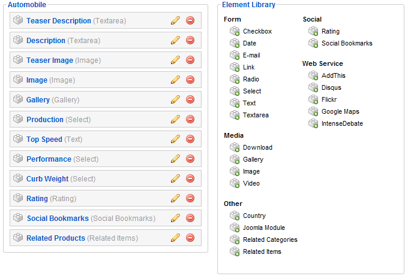
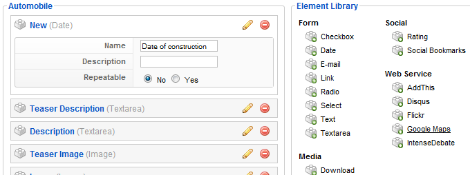
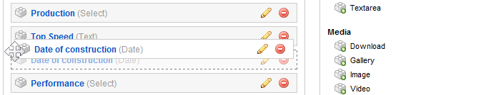

Learn how to extend the pre-build types of the apps that come with the ZOO. Add new elements to the types and see how you can assign them to a layout position.
Login to your Joomla installation and open the ZOO backend. Click on the little gearwheel on the right side of the tab bar. You will see all installed apps. Simply click on the app for which you want to extend a specific type.

On the next screen you see a list of all pre-build types, that come with the app. First we have to create a new element in the type, which can be configured later in the item creation steps.
To do so, hover the type you have chosen to extend and click on Edit Elements that appears upon hovering.

Now you see a list of all elements of this type on the left hand side with their names, their kind of element in brackets and small edit and delete icons. On the left you see a list of all elements, that can be used to build or extend your types. They are structured into groups, like form-, media- or social elements.
By clicking the small pencil icon next to each used element, a small form slides out and you can configure this element. We made a short tutorial for each element, where we explain the different settings of them.

Of course, when you want to delete an element, you can click on the small delete icon next to the pencil.
Now we want to add a new element to the type. To do so, choose the element you want to add from the list of available elements on the right side and simply click on it. The element will automatically be added to the top of the list on the left, ready to be configured. Please see our tutorials for the elements to see the different configurations of each element. In this example I want to add a date field to the type.
The order of the elements on the left is the order they'll appear when you create an item of this type. So if you don't want to have the new added element right on the top of the list, you can change it very easily. Just move your cursor over the small brick icon in front of the element and drag&drop the whole element to its new position. Very easy.
After this you can already see the new element, when you create an item of this type.

To show this new element to your visitors in the frontend of your site, you have to {doc: assign-elements-to-layout-positions text: assign it to its layout positions}.